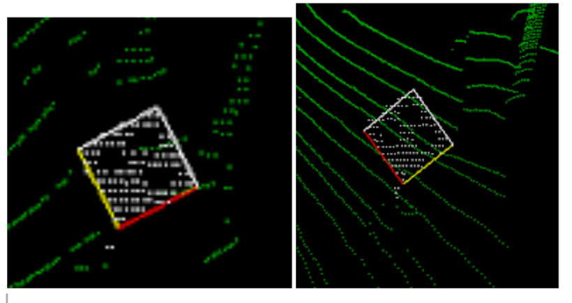
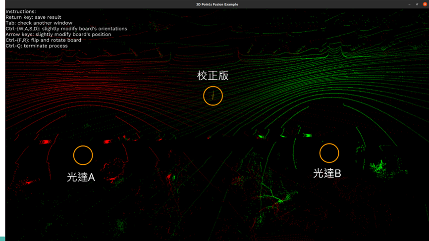
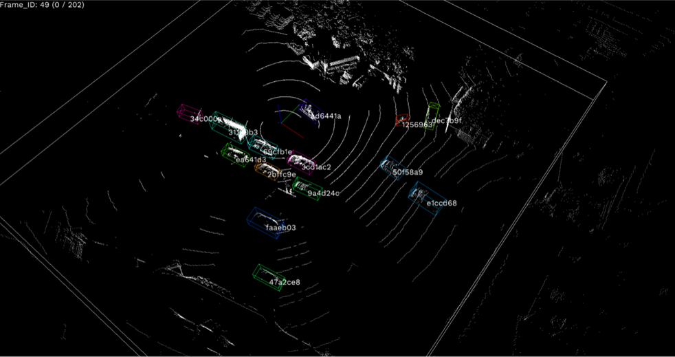
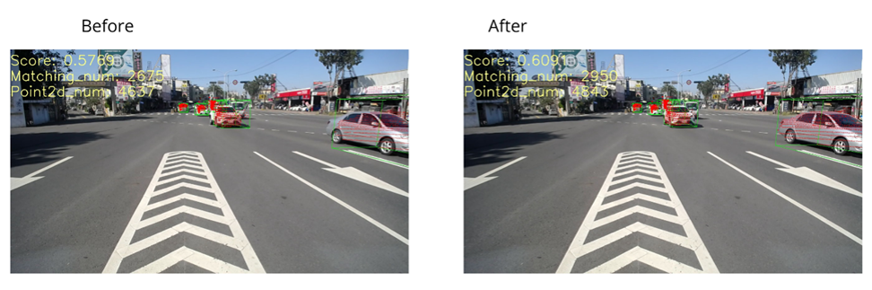
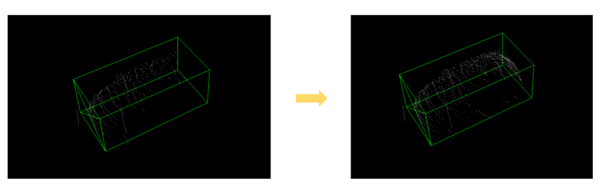

Min-Jyun Wu
0986299620 ·
yahoo55025502@gmail.com
使用Rust對兩組點雲感測器進行空間校正
此專案目的在於得到兩組感測器的空間參數以便於進行資料的融合。下圖為分別在兩支感測器觀測到的點雲中，使用Iterative Closest Point演算法所得到的校正版座標變換參數
經過座標變換後，可以得到將兩組點雲融合後之結果。此專案也支援參數的修改，避免演算法因點雲雜訊產生偏差結果。
March 2023
使用RUST、PYTHON在點雲資料中進行物件偵測及追蹤
此專案目的在於對蒐集的台灣道路資料進行分析，偵測道路中的汽機車位置。下圖為範例偵測結果，圖中每個汽機車都有獨立的ID，以辨別在不同時間中的同一個物件。
December 2023 - March 2023/span>
使用RUST對獨立的影像及點雲感測器進行動態時間校正
此專案目的在於對同地但不同時的感測器蒐集到的影像及點雲進行時間同步。在下圖中，影像中的紅點為點雲投影在影像上的位置，可發現經過校正同步後，右圖中的紅點與影像位置更加對齊。
July 2023 - December 2023
使用RUST製作用於進行點雲資料標記的工具
此專案目的在於對點雲資料標記出汽機車的位置及物件框的大小。下圖中為本工具的特色，透過將不同時間點的物件點雲融合，可得到更完整全面的物件點雲，進而判斷標記的物件大小是否正確。
September 2022 - June 2023/span>